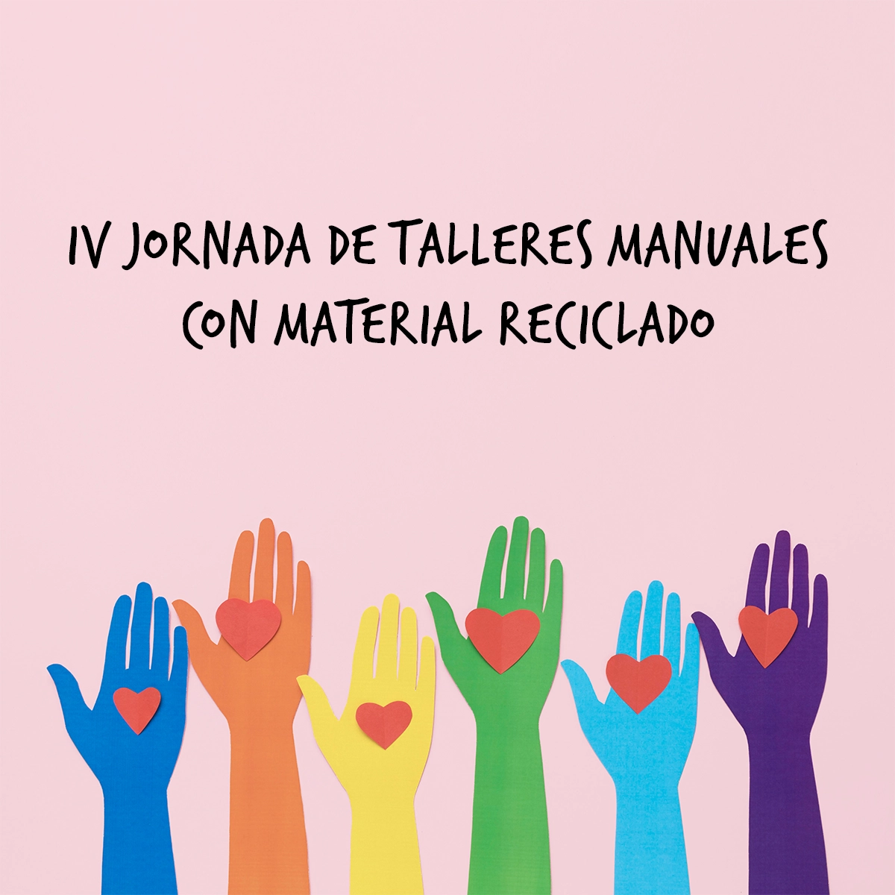

ARTE Y CULTURA
Talleres de manualidades
Este mes llegó con todo, y la oferta de cursos es enorme
28 Sep, 2023 08:14 p.m. AR
Hoy, a las 20, en el parque El Provincial y en la ex estación del mismo nombre (avenida Roca 650) abrirá sus puertas Nivel 2, un nuevo espacio que podrá albergar diversas propuestas artísticas y culturales. La nueva sala se sumará al polo gastronómico que ya reúne varios locales comerciales.
La apertura se llevará a cabo con la muestra Escorial, que reúne obras de los artistas Gustavo Escalante y Ludmila Ríos Guillén, a cargo del espacio.
En el segundo piso de la vieja estación ferroviaria que fue reciclada se ubica la sala Nivel 2 “cuya propuesta es dar visibilidad y circulación a diferentes expresiones de las artes visuales y la cultura, desde muestras, encuentros, seminarios, capacitaciones y talleres hasta conciertos, danza y teatro”, explica Ríos Guillén.
“Es un espacio nuevo, que tiene como objetivo vincular el sector empresarial con el arte contemporáneo local y nacional. Creemos que en Tucumán hay una producción artística increíble, y que el vínculo con otros sectores de la sociedad habilita un crecimiento profesional y cultural mutuo”, agrega.
“Escorial es una propuesta de sitio específico donde dialogamos con el espacio. Nuestras búsquedas como artistas, tanto de Escalante como mías, están relacionadas con la alquimia de los elementos, donde la materia se transforma, pasa de un estado a otro, y descubrimos los secretos que operan en la naturaleza. Entonces aparecen aspectos espirituales y sensaciones de extrañeza, reflexiones sobre la incertidumbre cotidiana. Ello nos lleva a repetirnos una y otra vez hasta aprender y transformarnos, en un crecimiento personal muy profundo. En esta instalación fundimos, separamos, observamos, organizamos el caos para inventarnos un orden que permita nuevas realidades, es una invitación para mirar y mirarnos”.
Ambos artistas recurren en sus obras a la geometría y al plegado que junto a la matemática y el ritmo, forman parte de su búsqueda. Para ello utilizan “materiales que son parte de un proceso de fundición, que contienen fragmentos de maquinarias, trabajos manuales, la energía de un montón de personas que construyeron objetos funcionales y que pasan por un proceso de transformación posibilitando otros usos, otras maneras de reutilizar y resignificar nuestros ciclos productivos y creativos”.
Fuente: La gaceta.